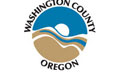
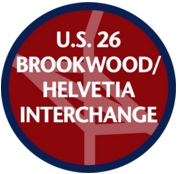

|  |
|
Weekly Roadwork News Highlights for the week ending October 23, 2015 (posted 10/16/15)
Heads up! Traffic pattern change! A new U.S. 26 westbound off-ramp opens Monday, October 19. The new ramp, Exit 61A, goes to southbound Brookwood Parkway only. The existing off-ramp, Exist 61B, will be temporarily closed for a week starting at 7 p.m. tonight, October 16. Northbound travelers will be detoured to the Jackson School Road interchange. When it reopens, it will serve northbound Helvetia Road only. For more information, visit ODOT's U.S. 26 Brookwood/Helvetia Interchange project page.
Glencoe Road will be closed at the railroad crossing just north of West Union Road from 7 a.m. Tuesday, October 20, through 7 p.m. Wednesday, October 21. This schedule is dependent on weather. The road will be closed to all road users – motorists, pedestrians and bicyclists. Signs will identify detour routes. The closure is needed to make repairs to the railroad crossing.
Adopt-A-Road volunteers will be picking up litter along the following roads: Road widening work continues on River Road from Farmington to Rosedale. Expect delays from 8:30 a.m. to 4 p.m. Monday through Friday, with extended work hours on Saturdays. This work should be complete by October 30. After a record number of months of dry weather, most gravel roads
in Washington County now require maintenance. In order to effectively
grade a gravel road, there must be sufficient moisture in the road bed.
Now that we’ve had a bit of rain, our graders are hard at work getting
caught up. Rather than jumping from one request location to another,
they are systematically working their way through the gravel road system
as quickly as they can.
The Cause + Event starts at 9 a.m. October 18 at Bethany Village Center. Runners and walkers will follow a 5K or 10K course along Bethany Boulevard, Central Drive, 153rd Avenue and other streets in the Bethany area. The final Council Creek Regional Trail Master Plan is now available online; scroll down to documents. With completion of the master plan, the vision of connecting the end of the TriMet MAX line in Hillsboro to the Banks-Vernonia State Trail moves one step closer to reality.
Today is the last day to comment on the top 20 Safety Improvement candidates being considered for funding. The Urban Road Maintenance District Advisory Committee will review comments received by end of day today, October 16. The committee is expected to recommend projects at their October 21 meeting. Their meetings are open to the public. Join decision makers at the Southwest Corridor Plan Community Forum from 6 p.m. to 8 p.m., October 19, at the Tigard Public Works Building. Share your input on high capacity transit alignment choices for the Tigard and Tualatin areas. Take an online survey beginning October 19. More information at swcorridorplan.org. Help shape TriMet's new Bike Plan. Take an online survey through October 31. Consider serving on a County board or commission. This is the time of year when appointments are made to the Urban Road Maintenance District Advisory Committee and the Rural Roads Operations and Maintenance Advisory Committee. Meetings of both committees are open to the public and time is provided on their agendas for public comments. Last year 61 crashes involving wildlife were reported in Washington County. October is the busiest month for vehicle-wildlife collisions in Oregon. More deer and elk are crossing roads this time of year due to breeding season and migration to winter ranges. Be on the alert and ready to slow down, especially in areas where signs identify popular areas for wildlife crossing. Be especially watchful around sunrise and sunset.
|
|||||||||||||||||||||||||||||||||||||||||||||||||||||||||||||||||||||||||||||||||||||||||||||||||||||||||||
|
Land Use & Transportation
1400 SW Walnut Street Hillsboro,OR 97123-5625 Phone: 503-846-ROAD (503-846-7623) Fax: 503-846-7620 Email: WC-Roads Land Use & Transportation |